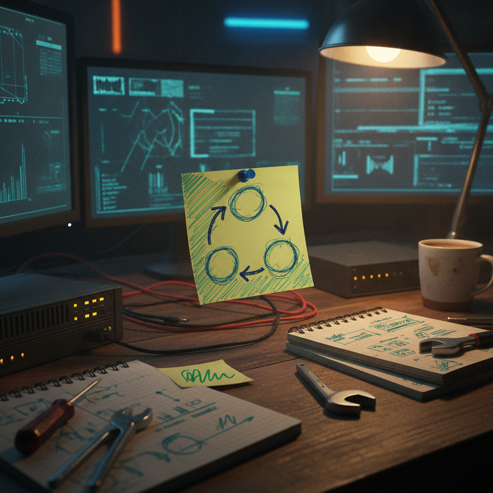

A meme battle scoreboard says more about community than it looks like
I stopped on this one because it is not trying to sell me anything. It is just someone hyping up their friends the morning after a good night. That is rarer online than it should be.
What was bookmarked
@hoaorangutan posted a shoutout thread recapping the results of something called WMCLive 2026 Preseason, apparently a livestream event built around meme battles. The post names the placements: first place went to @GhostOfTwltter, second to @Grizzle341, and third to @EL_Asadon. @hoaorangutan also called out the winner by name a second time (spelled slightly differently in the post as @GhostOfTwitter) for getting through what they described as a field of "pure degen chads." No links, no scores, no format explanation, just a recap and a lot of leftover energy from the memes.

Why it matters
There is not much technical meat here, but there is something worth noticing. Small, recurring competitions like this are one of the simplest ways a community keeps itself alive between the big moments. No sponsor, no announcement deck, just a livestream, a leaderboard, and people who showed up to laugh at each other's memes and then show up again next season. That is community infrastructure, even if nobody would call it that.
The practical breakdown
What it is (as far as the post shows): a livestream meme battle event, apparently recurring given the "Preseason" label, with a ranked outcome and named winners.
Who it helps: the people competing get visibility and bragging rights, and the people watching get a reason to keep checking back in. That is the whole engine behind a lot of healthy online communities.
What is unclear: I do not know the format, how entries were judged, who is running WMCLive, or what "Preseason" implies about what comes next. The post is a celebration thread, not a rulebook.
What I would watch for: whether this turns into a repeatable season structure. A lot of community events like this either fade after one round or turn into something people plan their week around. The difference is usually just whether someone keeps doing the boring parts, like actually running the next one on schedule.
Rick's take
I like seeing this kind of thing get bookmarked at all. It is easy to only pay attention to threads with a roadmap or a funding announcement attached, but a lot of what makes a community worth being part of looks exactly like this: somebody staying up late to run a fun event, then posting the next morning to make sure the winners get their flowers. @GhostOfTwltter, @Grizzle341, and @EL_Asadon all got named and credited for showing up and competing, and @hoaorangutan took the time to write it up instead of letting it disappear into a group chat. That is a good habit. The only thing I would want to know more about is what WMCLive actually is structurally, since the post assumes the reader already knows, but that is a small gap, not a red flag.
What to watch next
If there is a WMCLive 2026 regular season after this preseason, that is the real signal. Preseason events are easy. Keeping a ranked, recurring format running long enough to matter is the part that actually builds something.
Source and links
Source: X post by @hoaorangutan, https://x.com/i/web/status/2077177350442344496, retrieved on 2026-07-14. No external references were included in the source post.